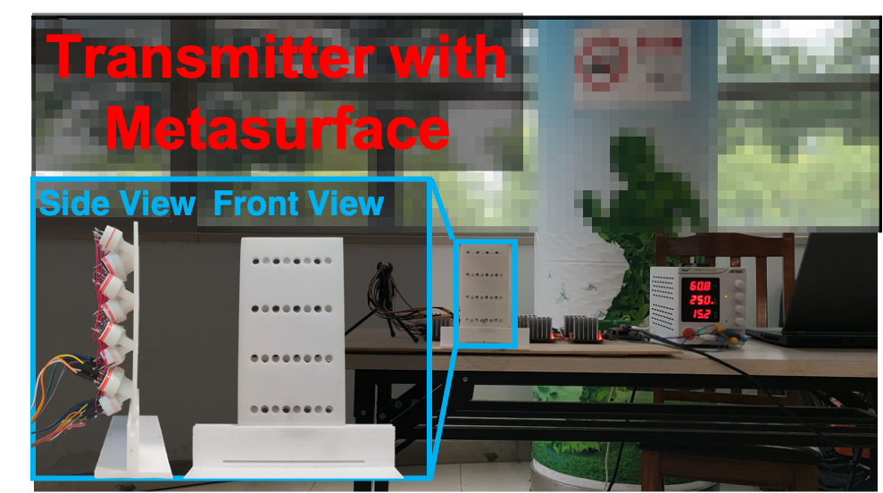

MuDiS: An Audio-independent, Wide-angle, and Leak-free Multi-directional Speaker
Accepted in ACM MobiCom 2024.
Yijie Li
1
, Juntao Zhou
1
, Dian Ding
1
, Lili Qiu
2,3
, Jiadi Yu
1
, Guangtao Xue
1,4
1
Shanghai Jiao Tong University,
2
Microsoft Research Asia Shanghai,
3
University of Texas at Austin
4
Shanghai Key Laboratory of Trusted Data Circulation and Governance in Web3
</div> <h3>Demo Video</h3> </div> </div> <hr> </div> <div class="narrow-container"> <div class="abstract"> <h1>Abstract</h1> <p><div style="text-align: justify;"> We propose a novel multi-directional speaker using a parametric array to generate multiple highly directional sound beams. The system leverages air nonlinearity to reproduce audible sound from ultrasounds. It overcomes the challenges in traditional parametric arrays in terms of transducer size and focused wavefront, by using a special cell structure that connects ultrasonic transducers with optimal interspace to redirect an approximate omnidirectional wavefront. An optimization-based algorithm is developed to minimize unintended leakages. To further improve sound quality, we propose a nonlinear distortion reduction scheme. </div></p> </div> <br> <br> <div class="row" style="text-align: center"> <div class="col-md-2 pt-4">  <h3>Figure 1. Prototype.</h3> </div> <div class="col-md-2 pt-4"> <img src="demo_imgs/scenario.png" style="width: 80%"> <h3>Figure 2. Scenario.</h3> </div> </div> </div> <br> <br> <hr> <br> <br> <div class="comparisons"> <h1>Performance</h1> <p><div style="text-align: justify"> We constructed a prototype of a multi-directional speaker employing our metasurface. We proceed to demonstrate the efficacy of our proposed <b> Optimization-based Beamforming </b> and <b> Nonlinear Distortion Reduction </b> scheme alongside traditional beamforming (Delay and Sum Beamforming) and MVDR Beamforming scheme. </div></p> <h2>Scenario</h2> <p><div style="text-align: justify"> As depicted in Figure 2, our multi-directional speaker with the metasurface simultaneously transmits two distinct beams. The first beam is directed towards 0° to transmit a female voice, while the second beam targets 60° to transmit a male voice. Recorded voices from 0°, 30°, and 60° are provided below for reference. </div></p> <div class="comparisons-desktop" align="center"> <h3> Original Voices. </h3> <table> <tbody> <tr> <td> <div class="audio"> <audio controls> <source src="demo_audios/woman6.wav" type="audio/wav"> </audio> </div> </td> <td> <div class="audio"> <audio controls> <source src="demo_audios/man6.wav" type="audio/wav"> </audio> </div> </td> </tr> <tr> <th>0°: Female Voice</th> <th>60°: Male Voice</th> </tr> </tbody> </table> <br> <br> <h3> Sound Received at 0° <div style="color: #dc3545;"> (Expected: Female Voice Only)</div></h3> <table> <tbody> <tr> <td> <div class="audio"> <audio controls> <source src="demo_audios/2beams_0deg/demo_null_0deg.wav" type="audio/wav"> </audio> </div> </td> <td> <div class="audio"> <audio controls> <source src="demo_audios/2beams_0deg/demo_raw_0deg.wav" type="audio/wav"> </audio> </div> </td> <td> <div class="audio"> <audio controls> <source src="demo_audios/2beams_0deg/demo_mvdr_0deg.wav" type="audio/wav"> </audio> </div> </td> </tr> <tr> <th>Ours</th> <th>Traditional Multi-beamforming</th> <th>MVDR Multi-beamforming</th> </tr> </tbody> </table> <br> <br> <h3> Sound Received at 30° <div style="color: #dc3545;"> (Expected: No Voice)</div></h3> <table> <tbody> <tr> <td> <div class="audio"> <audio controls> <source src="demo_audios/2beams_30deg/demo_null_30deg.wav" type="audio/wav"> </audio> </div> </td> <td> <div class="audio"> <audio controls> <source src="demo_audios/2beams_30deg/demo_raw_30deg.wav" type="audio/wav"> </audio> </div> </td> <td> <div class="audio"> <audio controls> <source src="demo_audios/2beams_30deg/demo_mvdr_30deg.wav" type="audio/wav"> </audio> </div> </td> </tr> <tr> <th>Ours</th> <th>Traditional Multi-beamforming</th> <th>MVDR Multi-beamforming</th> </tr> </tbody> </table> <br> <br> <h3> Sound Received at 60° <div style="color: #dc3545;"> (Expected: Male Voice Only)</div></h3> <table> <tbody> <tr> <td> <div class="audio"> <audio controls> <source src="demo_audios/2beams_60deg/demo_null_60deg.wav" type="audio/wav"> </audio> </div> </td> <td> <div class="audio"> <audio controls> <source src="demo_audios/2beams_60deg/demo_raw_60deg.wav" type="audio/wav"> </audio> </div> </td> <td> <div class="audio"> <audio controls> <source src="demo_audios/2beams_60deg/demo_mvdr_60deg.wav" type="audio/wav"> </audio> </div> </td> </tr> <tr> <th>Ours</th> <th>Traditional Multi-beamforming</th> <th>MVDR Multi-beamforming</th> </tr> </tbody> </table> </div> <br> </div> <br><br> <hr> <script src="assets/audio_height.js"></script> </body> </html>